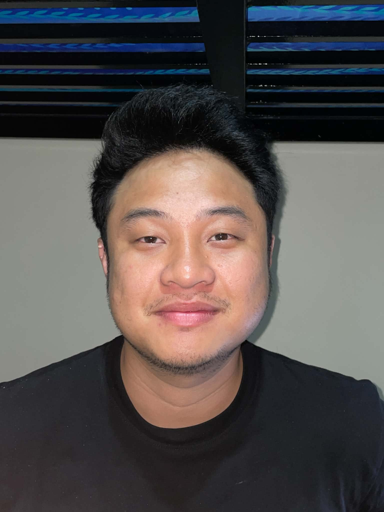

Virtual Assistant · Administrative & Technical Support
Rap Raedon C. Pono
Reliable, proactive, and detail-oriented remote-work candidate experienced in office administration, customer service, technical support, file management, community operations, and social media assistance.

Experience
Seafarer
2024—PresentTransitioning to full-time remote work
My maritime experience strengthened my discipline, adaptability, time management, and ability to perform reliably under pressure. I am now pursuing a long-term Virtual Assistant career.
Technical Staff
2022—2024PDRRMO Surigao
- Provided computer hardware and software troubleshooting for office systems and equipment.
- Delivered general IT support and helped maintain efficient daily workflows.
- Handled photography, videography, photo editing, and video editing tasks.
Volunteer Rescue Member
2021Private rescue team
Supported team-based rescue and community activities, strengthening responsiveness, coordination, and calm under pressure.
Administrative Staff
2020 · 6 monthsGogo Xpress
Handled office administration, daily task flow, and organized file management in a fast-moving operations setting.
Project Experience
Developer & Community Manager
Private gaming project- Organized a Discord community, coordinated contributors, and supported users.
- Published announcements and maintained an active social media presence.
- Worked hands-on with server files, configuration, basic C++ edits, and database fundamentals.